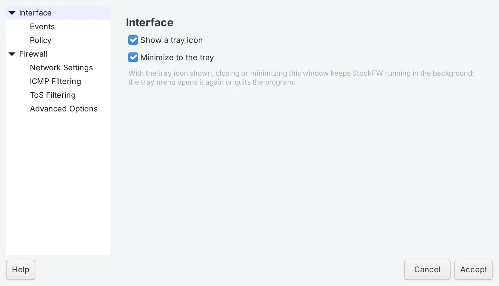
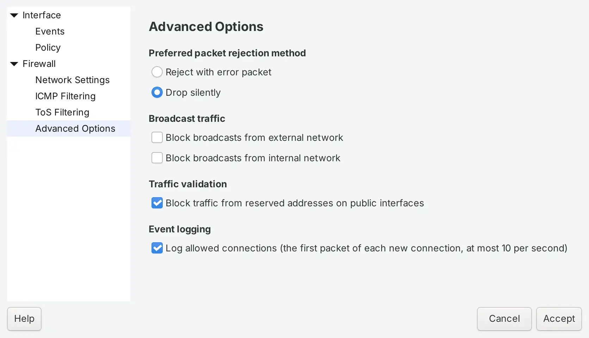

Preferences
Open it from the bottom of the sidebar or with Ctrl+,. The dialog has two groups, Interface for how the program behaves and Firewall for what the engine does. A control that cannot work on your platform is shown disabled with a sentence saying why, so you never flip a switch that does nothing.
The dialog is being rebuilt in the look of the new Overview, on both platforms. Every setting below stays; the layout changes.
Interface#

- Show a tray icon
- On by default. Puts StockFW in the notification area with the firewall state in its tooltip.
- Minimize to the tray
- On by default. With the icon shown, closing or minimising the window keeps StockFW running in the background; the tray menu opens it again or quits. See Background and the tray.
Interface › Events#

- Hide repeated events
- Off by default. Drops a row when the same source, port and verdict arrived a moment ago, so a scan does not flood the list.
- Skip events that are not for the firewall
- On by default. Leaves out records the firewall subsystem did not produce.
- Ignored hosts, Ignored ports
- Shown disabled. The original program had these lists; this version has not wired them up yet, and says so instead of showing an empty box that would accept entries and ignore them. Known gap
Interface › Policy#

- Apply policy changes immediately
- On by default. Each rule you add, edit or remove is pushed to the firewall as soon as it is saved, through the same gate and with the same audit line as the Apply button. Off, every change waits for Apply policy, and the Policy page shows what is staged.
Firewall#
- Start/restart firewall on program startup
- Off by default. When the app starts, it loads the saved policy and starts the firewall. In 1.0.7 this reads the policy first and goes through the apply gate; earlier Linux versions briefly loaded an empty policy before the saved one. In progress for 1.0.7
- Start/restart firewall on dial-out, on DHCP lease renewal
- Shown disabled: not implemented in this version. Windows starts its own firewall before any program runs, so there is nothing to restore at boot there; on Linux, see what happens at reboot.
Firewall › Network Settings#
Linux This page is offered on Linux only. Windows has no equivalent that the app can drive honestly, so it is not shown there rather than shown inert.

- Internet connected network device
- The external interface, or Any device. Needed for port forwards and for the “reserved addresses on public interfaces” block. The list is read from the system, so only real adapters appear.
- Local network connected device
- The internal interface in router mode. Traffic arriving on it is accepted.
- Enable Internet connection sharing
- Router mode: forwarding between the two interfaces with masquerading (IPv4 only). Port forwards need this.
- Enable DHCP for the local network
- Shown disabled: the built-in DHCP server of the original is not carried over.
Firewall › ICMP Filtering#

Enable ICMP filtering turns the page on. With it off, ICMP is left to the engine’s defaults. With it on, only the ticked types may arrive:
| Type | Default | Notes |
|---|---|---|
| Echo request (ping) | on | Lets others ping you. Linux rate-limits it to one a second. |
| Echo reply (pong) | on | Answers to your own pings. |
| Traceroute | on | UDP port 33434, which Unix traceroute uses; not ICMP at all, kept here because the original kept it here. |
| MS Traceroute | on | Destination-unreachable, which Windows tracert needs. |
| Unreachable | on | Destination-unreachable in general. On IPv6, address-unreachable. |
| Redirection | off | Router redirects, rate-limited. Leave off unless you know your network uses them. |
| Timestamping, Address Masking, Source Quenching | off | IPv4 only; ICMPv6 has no such messages, and the labels say so. |
Two things are never filtered while ICMP filtering is on, because the network stops working without them: time-exceeded and parameter-problem on IPv4, and on IPv6 the whole of neighbour discovery, router advertisements, packet-too-big, multicast listener reports and DHCPv6 replies. The page says so under the list. Built for 1.0.7
Windows Windows Firewall applies the same choices as rules without the rate limits the Linux backend adds. Verified test-core.sh
Firewall › ToS Filtering#
Linux Type-of-service marking is not wired into the rule generator in this version, so every control on this page is disabled and the page says so at the top. It is kept so the layout matches the original; nothing you set here has an effect. Known gap
Firewall › Advanced Options#

- Preferred packet rejection method
- Reject with error packet tells the sender at once that the connection is refused; Drop silently lets it time out. Linux only: Windows Firewall always drops silently and has no per-rule reject, and the page says so.
- Block broadcasts from external network, from internal network
- Drop broadcast traffic arriving on the external or the internal interface.
- Block traffic from reserved addresses on public interfaces
- Anti-spoofing: drop packets that arrive on the external interface claiming a private or reserved source address. Needs an external interface on the Network Settings page (Linux) or applies to the Public profile (Windows).
- Log allowed connections
- Linux 1.0.7. Logs the first packet of each newly allowed connection, at most ten a second, so the Events page and the Activity graph can show allowed traffic and not only blocks. Windows logs allowed connections through its own audit policy and has no switch here. Built for 1.0.7
How settings reach the firewall#
Interface settings take effect when you press Accept. Firewall settings compile into rules, so they are pushed with the next Apply, through the same gate as the policy; on Windows they become rules named StockFW … (with a space, where policy rules have a hyphen) so the two sets can never collide. Verified test-core.sh
Where they are stored#
A plain ini file, stockfw.conf, with a [client] and a [firewall] group: %APPDATA%\stockfw\stockfw.conf on Windows, ~/.config/stockfw/stockfw.conf on Linux (/root/.config/stockfw/ when run as root). You can edit it with the app closed; a missing key takes its default. See Files and formats.